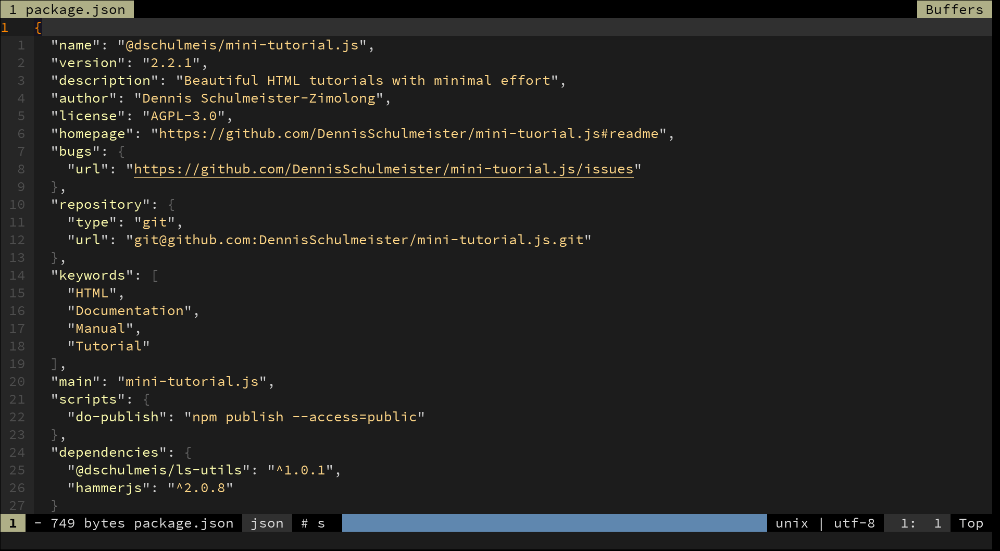
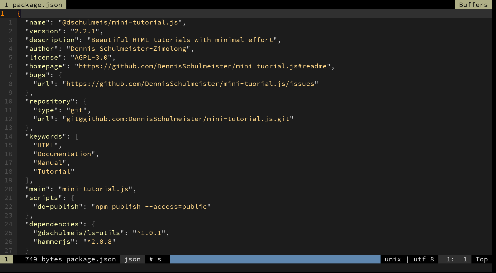

Obwohl heutige Betriebssysteme längst über komfortable, grafische Benutzeroberflächen
verfügen, besitzen sie immer noch ein klassisches Terminal für Power-User. Insbesondere
unter Linux (sowie allen anderen von [Unix](https://de.wikipedia.org/wiki/Unix){target="_blank"}
abgeleiteten Betriebssystemen) gehört das Terminal zu den unverzichtbaren Werkzeugen, da hier
auf eine seit Jahrzehnten gepflegte Werzkzeugsammlung zurückgegriffen werden kann. Die
Grundbefehle haben sich dabei unter allen Betriebssystemen seit den frühen Tagen nicht
verändert!
Die meisten Entwicklungswerkzeuge werden heute nach wie vor im Terminal ausgeführt.
Der Grund hierfür ist, dass die früheren Betriebssysteme von Programmierer*innen für
Programmierer*innen geschrieben wurden. Die Programme können dadurch aber auch über
Shell-Skripte automatisiert oder in CI/CD-Pipelines integriert werden. Und schlussendlich
sind Konsolenausgaben deutlich einfacher zu programmieren, als grafische Benutzeroberflächen.
### Windows {.dhbw-lightblue}
Unter Windows kann das Terminal aufgerufen werden, indem man im Startmenü nach einem
der Begriffe cmd, Eingabeaufforderung oder PowerShell sucht und
dann Enter drückt. Das Terminalfenster startet dabei immer mit dem
Benutzerverzeichnis als Arbeitsverzeichnis. Alternativ kann man in die Adresszeile
des Explorers cmd eingeben, um innerhalb des aktuellen
Verzeichnisses ein Terminal zu öffnen.
### Andere Betriebssysteme {.dhbw-lightblue}
Bei den anderen Betriebssystemen gibt es keinen einheitlichen Mechanismus zum Starten
eines Terminals. Meistens findet man es aber vorinstalliert in der Programmübersicht.
 Die traditionalle Windows-Eingabeaufforderung
Die moderne Windows PowerShell
Typisches Terminalfenster unter Linux
Eingebautes Terminal in Visual Studio Code
Die traditionalle Windows-Eingabeaufforderung
Die moderne Windows PowerShell
Typisches Terminalfenster unter Linux
Eingebautes Terminal in Visual Studio Code
 
